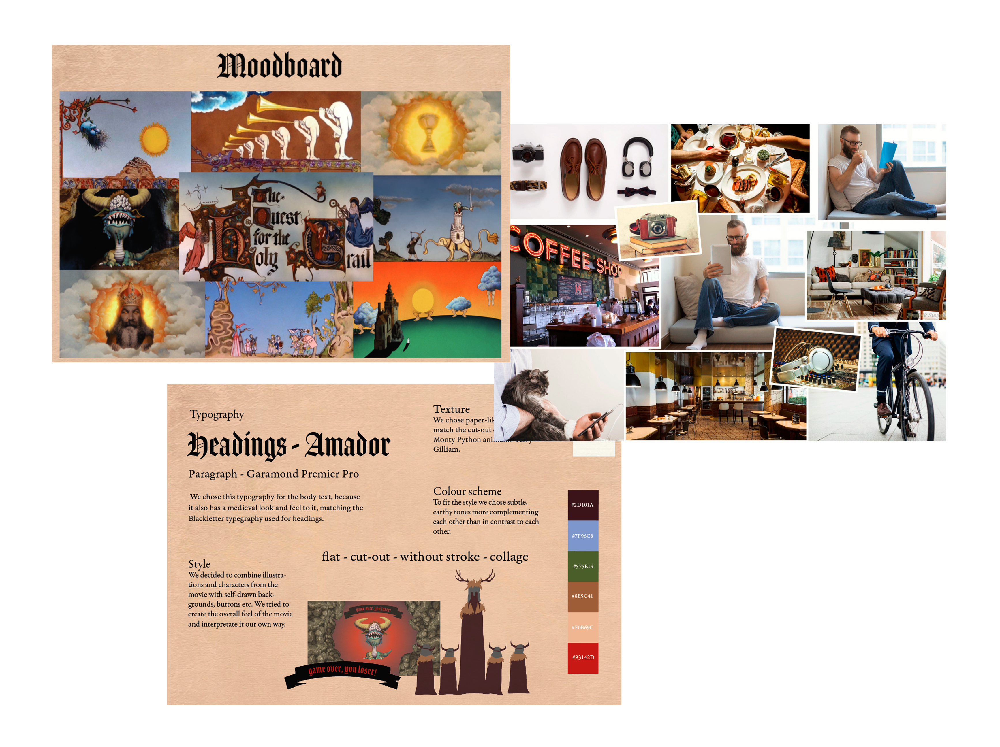

Presentation "Monty Python and the Holy Grail"
This is the presentational file of our project "Monty Python and the Holy Grail" interactive poster.
As a part of the whole process we started with a moodboard to define the style of our interactive poster. We chose this medieval design style as a part of the requirements of the assignment, to have a connection between the style of the movie and the interactive poster. We had this requirement in mind when we chose the colours, the fonts, the style of the elements and even the sounds of the interactive poster.
It was defined that the target group are young adults, so we chose to be a little more detailed and to target kind of "hipsters", who would appreciate the specific humour of "Monty Python and the Holy Grail".
We have a storyboard with all the necessary details and showing the main scenes in our interactive poster. Here we used sound, time and a lot of interactive images and buttons as dramaturgical elements.
At the end of our presentation file we show a state machine diagram with all the stages of our interactive poster, and how it is planned to work at the end. The final part is a pseudo code.

My role
My role here was to create the personas collage and the pseudo code.